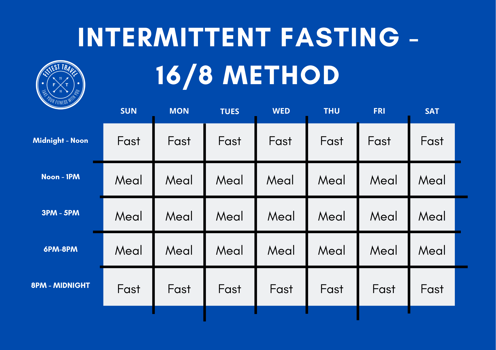

Intermittent fasting, also known as intermittent energy restriction, is an umbrella term for various meal timing schedules that cycle between voluntary fasting (or reduced calorie intake) and non-fasting over a given period. Methods of intermittent fasting include alternate-day fasting, periodic fasting, and daily time-restricted feeding.
